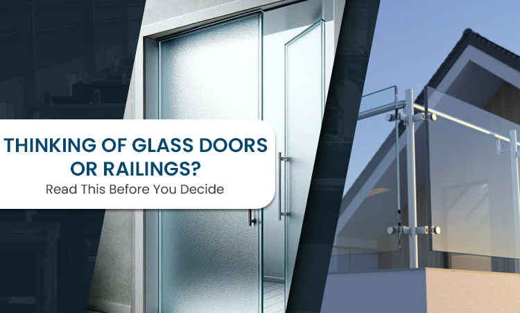

Thinking of Glass Doors or Railings? Read This Before You Decide
Glass looks good. It feels modern. It opens up space. But aesthetics alone should not be the reason you choose glass doors or railings. The first time someone in Chennai walks into a space with glass railings or doors that are just right, there's a moment of quiet surprise — that it doesn't feel cold, that it actually feels like part of the space, not something placed on top of it.
But that only happens when a few practical things are thought through first. This blog isn't about selling you glass. It's about helping you decide whether glass is the right choice for your place. A glass balustrade behaves differently from a metal one. A frameless glass door feels different from one with frames. And all of this affects how it looks, how it performs, and how it holds up over time. Let's talk about what really matters before you make the investment.
Glass Isn't Just "Pretty", It's a Structural Choice
When you hear "glass doors" or "glass railings," imagine this first:
Glass is not wood.
Glass is not metal.
It doesn't behave the same under stress.
The strength of the glass, the quality of the interlayer, and the way it's supported make all the difference. You might see a sleek glass railing in a hotel lobby and think the same approach will work at home. But that hotel will usually have specific load limits, code requirements, and professional installation standards that may differ from your balcony or staircase — you need to keep this in mind.
That's why it's worth understanding what type of glass you're choosing. Tempered glass. Laminated glass. Toughened laminated glass. Each has a property of its own that affects strength, impact resistance, and how it behaves when stressed under a situation. A strong aesthetic decision needs to come after understanding these performance differences.
Safety and Building Codes Matter a Lot
Glass installations are not just about looks. They must meet safety standards for where they are used. Railings near balconies, staircases, or open floors need a certain height and strength. Glass doors usually end up needing adequate framing, seals, and hardware so that they operate smoothly and don't end up becoming a hazard.
Different cities and states have specific requirements of their own. Architects and builders don't choose glass at random. They usually reference codes that determine thickness, anchoring, railing height, and load tolerance. Even for interior applications, safety is not optional. You don't want a situation where a panel gives way because the wrong type of glass was chosen for a corridor or balcony.
You can read more about how building wall and safety codes affect material choice here, and why following them matters more than trends. In short: if you're investing in glass for doors or railings, do it in a way that meets safety requirements. Not just what looks good in a picture.
Where Glass Actually Performs Well (And Where It Doesn't)
Glass does a few things really well. It lets light flow. It opens up sightlines. It makes spaces feel larger. In areas where you want transparency and a modern feel without losing strength, glass is a great choice.
But glass isn't ideal everywhere.
-
High-impact zones? You want added strength and lamination.
-
Privacy areas? Plain clear glass may not feel right; decorative or frosted options work better.
-
Outdoor spaces with weather exposure? Glass needs proper drainage and sealing or it can become a maintenance worry.
Understanding where the glass goes affects what kind of glass you choose. This is backed by real architectural use cases. Designers often consider these factors when specifying materials, because how the material behaves in daily life matters more than how it looks in a showroom photo. See examples here.
Tempered vs Laminated vs Toughened Laminated
These terms get thrown around a lot, and for good reason.
-
Tempered Glass — Stronger than regular glass, breaks into small, less dangerous pieces. Good for many railings and doors.
-
Laminated Glass — Layers of glass bonded with interlayer. Holds together when cracked. Adds basic safety and sound control.
-
Toughened Laminated Glass — Combines strength with safety. Even when broken, fragments stay bound to the interlayer. This reduces the risk of serious injury and is preferred where people move around closely.
Choosing the right one is not about paying more. It's about picking what performs best for where it will actually be used.
Privacy, Aesthetics, and Everyday Life
Some people love the open feeling of clear glass. Others prefer some level of privacy. Decorative glass films or Fasara film options can give you privacy without losing light. They add subtle style, reduce glare, and keep the openness alive.
Glass doesn't need to be clear like a window. There are multiple textures, patterns, or finishes that serve specific purposes and situations — from diffusion to hiding light clutter behind partitions. Discussing these things upfront saves disappointing surprises later.
Maintenance Isn't Optional, It's Practical
One reason people hesitate about glass is maintenance. Yes, glass shows smudges and fingerprints. Yes, it needs regular cleaning if you want it to stay clear and beautiful. But in real life, maintenance is not a burden when it's built into routine.
Daily wipe down. Monthly deeper clean. Do it regularly like you maintain wooden or metal surfaces — it's part of the material life cycle. The key is to choose glass coatings and compositions that are easy to care for, especially in humid or salty climates like coastal cities.
Installation Quality Changes Everything
You can choose the best glass in the world, but if installation is weak, performance suffers. Anchoring. Leveling. Edge protection. Hardware. All these details matter far more than glass thickness alone as a metric.
Proper installation will ensure that glass withstands daily use, expansion, and unexpected knocking without loosening or having issues. This is where experience counts, not just random sales language.
How Tufftron Approaches Glass Doors and Railings
At Tufftron, glass is treated as a structural material first, not just a finish. We look at where it's going. How people will use the space. What load it must bear. What weather conditions it will face. Then we match these practical needs with the right glass type.
Safety, durability, and performance will always come before anything else. And yes, aesthetics are also part of the conversation here. But they are grounded in real use cases, not just showroom visuals. If you're considering glass for doors or railings, this approach helps ensure what you invest in lasts longer and performs better.
Final Thought
Choosing glass doors or railings is not just a design decision. It's a combination of strength, safety, daily behaviour, and long-term performance. Glass can look beautiful and open up your space. But it only feels right when it works right.
That's when the space doesn't just look good in pictures — it works well every day. If you're thinking about glass in your home or workspace, take a moment to consider how it will live with you. Good decisions now save unnecessary problems later.